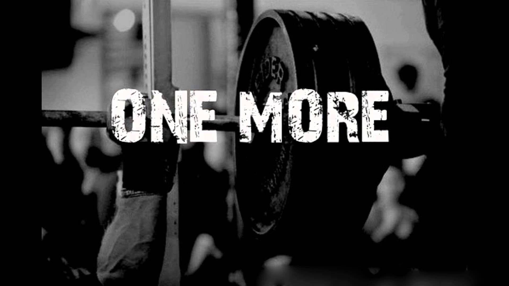

GYM (Fitness) koşma, yürüyüş, yüzme, bisiklet sürme, tırmanma, kürek çekme gibi kardiyo
antrenmanlarının yanında bir çok insanın yaptığı vücüt geliştirme; bölgesel gelişim
amacı ile de yapılan, kimine göre bir hobi kimine göre bir iş, bir ayrıcalıktır.

Kan dolaşımını hızlandırır. Düzenli olarak fitness yapmak aynı zamanda enerji kazanmanızı sağlar.
Akciğer kanserini ve diyabeti azaltır. Günlük olarak yapılan fitness, daha esnek ve dengede olmanızı sağlar ve kronik olan baş ağrılarının hafiflemesine yardımcı olur.
Besin değerlerine dikkat edilir bu yüzden vitamin değerleri artar ve dengeli beslenme sağlanır.
Vücudun sıkı bir forma sahip olmasını sağlar. Vücuttaki yağ oranının azalmasını ve kas kütlesinin artmasını sağlar.
Sırt ve karın kaslarını çalıştıran egzersizler duruş bozukluğu gibi problemlerin ortadan kaldırılmasına da katkı sunar. Egzersizler nefes alıp vermeyi düzenler, vücuttaki toksinlerin atılmasına olanak tanır.
Üst düzey programlar, diyetler ve antrenmanlar ile vücüdunu büyütme ve şekillendirme amaçlı fitness yapan insanlar yarışmalara katılır
ve derceleri ile profesyonel sporcu olur. Kendilerini yönlendiren ve sporcunun ihtiyaçlarını karşılayan bir antrenörleri vardır.
Yarışma esnasında sporcunun vücüt genetiği ve kendini geliştirdiği kadarıyla sahnede poz verir ve
derece kazanmak için bir çok kişiye karşı jüri üyelerinin kendisini seçmesi için çabalar.
Dünya üzerinde yapılan bu yarışmalar kategorilere de ayrılır (Klasik Fizik, Powerlifting vb.) ve her sporcu kendi vücut tipi ve genetiğine göre
kendini geliştirebilir.
Fitness sporu; vücut ağırlığıyla, fitness ekipmanlarıyla ya da fitness makineleri ile yapılabilir.
Göğüs kası geliştirme egzersizinden örnek verecek olursak;
Vücut ağırlığı ile yapılan : Şınav
Ekipman ile yapılan : Dumbbell bench press, chest dips, inverted row
Makine ile yapılan : Chest press machine, peck deck fly
Fitness‘da dikkat edilmesi gerekenler ise; sakatlanmalardan korunmak için hareketleri doğru form ve ağırlıkta yapmak,
beslenmeye dikkat etmek, kendi ihtiyaçlarınıza özel program oluşturmaktır.
İhtiyaç belirleme fitness‘ın en önemli faktörüdür.
→ Göbeğiniz mi var? Kalori açığı yarat, kilo ver.
→ Kambur duruşunuz mu var? Omurgayı destekleyecek fitness hareketlerini kullan.
→ İnce bacaklarınız ya da düz bir kalçanız mı var? İlgili kas gruplarına yönelik hareketleri yap.
→ Fitness sporunun matematiği budur. Eksiği tespit et ve onu gider.
Fitness Hareketlerini Doğru Formda ve Ağırlıkta Yapmak
Doğru form; Çalıştırılan kasın izole halde yani tüm yükü ona vererek, eklemler ve omurgadaki yükü hafifleterek yapmanızı şeklindedir.
Doğru ağırlık; Kasın gelişmesi için önce onu yırtıp sonra da yiyeceğiniz protein ile onu tamir edip dinlendirmeniz gerekir.
Sarkoplazmik Hipertrofi, Miyofibriler Hipertrofi gibi terimler fitness sporunun önemli detaylarıdır
fakat kütlesel gelişmeye olanak sağlayan sarkozplazmik hipertrofi antrenmanlarının her sporcuda aynı sonucu vermediği, hatta kas kaybına dahi neden olabileceği deneylerle ispatlanmıştır.
Bu yüzden fitness da gelişmeden önce araştırılmalı, kendinize uygun programlar bulmalı ve bu yöndemilerlemelisiniz.
Fit Vücüt, Zinde Olmak
Eğer amacınız sadece zinde olmak, uygun kiloda olmak, sağlıklı olmak ise hareketleri izole şekilde sürdürüp,
düşük ağırlık ve çok tekrar sayısı ile kardiyo süresini uzatıp beslenmeye önem vererek fit ve zinde bir vüzuda sahip olabilirsiniz
Sağlıklı ve zinde olabilmeniz için beslenmeye büyük önem vermeniz gerekiyor. Fitness egzersizlerini ne kadar doğru formda yaparsanız yapın,
ihtiyaç duyulan kalori, protein, yağ ve karbon hidrat miktarlarından eksik ya da fazlasını alırsanız emekleriniz boşa gidecektir.
Bu yüzden ciddiye alınması gerken bir spordur.
Supplementler
Gıda takviyesi olarak da adlandırılan, kişinin uyguladığı diyete yönelik tamamlayıcı bir bileşen adı altında tasarlanmış
hap, kapsül, tablet veya sıvı formunda ağız yoluyla tüketimi sağlanan ürünlerdir.
Supplementler doğru kullanıldığında, kaliteli ve içeriği temiz olduğunda, doğru ölçüler hakkında bilinçli olunduğunda oldukça faydalıdır.
Örnek olarak;
→ BCAA
→ Kreatin
→ Protein tozu
→ ZMA
Vücut geliştirme; ağırlık kaldırma, beslenme, kardiyovasküler çalışmalar ve diğer uygulamaların bir araya getirilmesiyle, kas liflerini geliştirme, dayanıklılığı artırma ve güç kazanma işlemidir.
Çoğu zaman yarışma amaçlı yapılır. Bu aktiviteyle uğraşan kişiye Vücut geliştirme sporcusu ya da vücutçu denir.
Vücut geliştirme sporu 1950 ve 1960’larda, güç ve jimnastik şampiyonlarının ortaya çıkmasıyla, vücut geliştirme dergileriyle, antrenman ilkelerinin belirlenmesi, protein ağırlıklı beslenme ve gıda takviyeleri iyle daha da popüler hale geldi.
Organizasyonların sayısı arttı ve IFBB (International Federation of BodyBuilding and Fitness - Uluslararası Vücut Geliştirme ve Fitness Federasyonu ) kuruldu.
Vücut geliştirme programları;
→ Bölgesel
→Tüm vücut – fullbody
→ Ast vücut, alt vücut
→ Ön yüz, arka yüz
→ Birleşik setli, süper setli, drop setli vs.